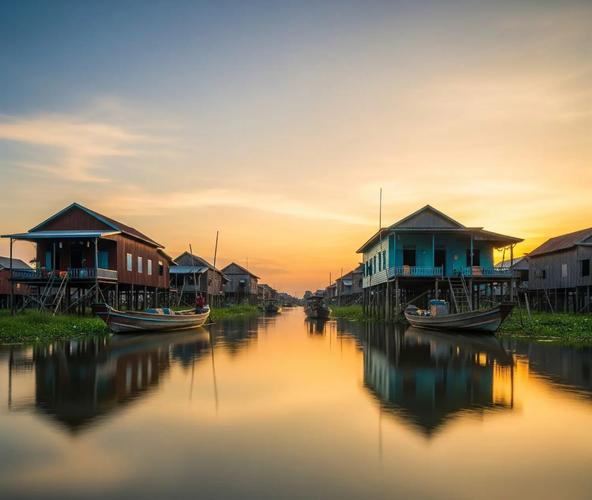
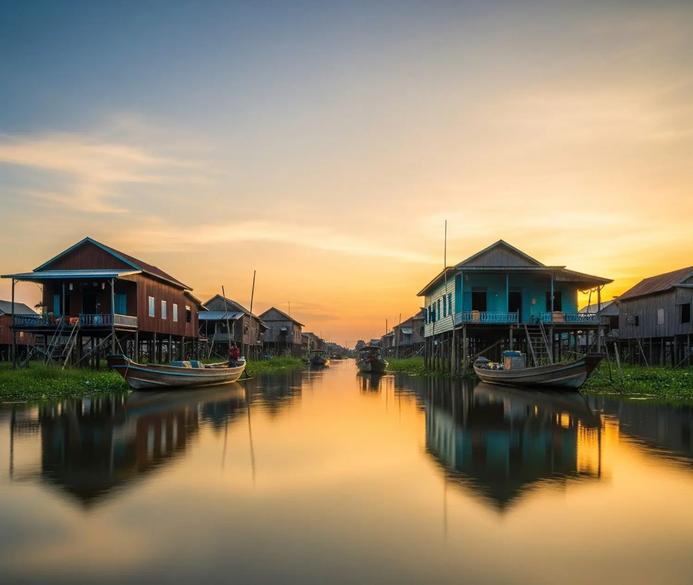

Comfy Dorms
Comfy Dorms Private Retreats
Private Retreats 4 Sparkling Pools
4 Sparkling Pools Restaurant & Bar: Gather & Graze
Restaurant & Bar: Gather & Graze Vibrant Common Areas
Vibrant Common Areas 24-Hour Welcoming Reception
24-Hour Welcoming Reception Laundry service
Laundry service Complimentary Wi-Fi
Complimentary Wi-Fi Daily Tours & Adventures
Daily Tours & Adventures 

Distance and Estimated Travel Time:
- Distance: Onederz Siem Reap is now approximately 45-50 kilometers (28-31 miles) from the new Siem Reap Angkor International Airport (SAI).
- Travel Time: Due to the increased distance, the journey typically takes 50-75 minutes, depending on your chosen mode of transport and traffic conditions.
Transportation Options from the Airport:
Upon arrival at Siem Reap Angkor International Airport (SAI), here are your options for reaching Onederz Siem Reap:
1. Taxi (Most Recommended & Comfortable):
- Where to find: Official airport taxi counters are available inside the arrivals hall and just outside the exit. It's highly recommended to purchase a fixed-price taxi voucher from these authorized counters. This ensures a regulated fare for the longer journey.
- Cost: Expect fares to be in the range of $30 - $40 USD due to the significantly increased distance to the new airport. Confirm the exact price at the counter before departing.
- Time: Approximately 50-60 minutes.
- Recommendation: This is the most straightforward, comfortable, and reliable option given the new airport's distance.
2. Tuk-Tuk:
- Where to find: Tuk-tuks are available outside the airport exit. While a longer and less comfortable ride from the new airport compared to a taxi, it's an option for budget travelers. Negotiate the fare with the driver before you start your journey.
- Cost: Around $20 - $25 USD. Bargaining is common, but agree on the price beforehand.
- Time: Approximately 60-75 minutes, as it's an open-air ride over a longer distance.
- Recommendation: An option for budget travelers seeking a local experience, but be prepared for a longer journey exposed to the elements.
3. Airport Shuttle Bus / Shared Van Service:
- Where to find: Look for official airport shuttle bus or shared van services at designated counters or exits at the airport. These can be a more economical option if you're traveling solo and don't mind sharing.
- Cost: Typically around $8 - $10 USD per person for a shuttle bus. Shared vans might be slightly more.
- Time: Can vary from 60-90 minutes depending on the number of stops.
- Recommendation: A good balance of cost and convenience if you're on a budget and don't require a direct, private transfer. The shuttle buses usually drop off at central locations in Siem Reap, from where you can take a short tuk-tuk ride to Onederz.
Arranging Transfers TO the Airport:
While Onederz Siem Reap cannot arrange your pick-up from the airport, we would be happy to assist you in arranging a taxi or tuk-tuk transfer from the hostel to Siem Reap Angkor International Airport (SAI) for your departure. Please note that this service will incur a charge. Please speak to our reception staff to arrange this.


 Lively Evening Events
Lively Evening Events